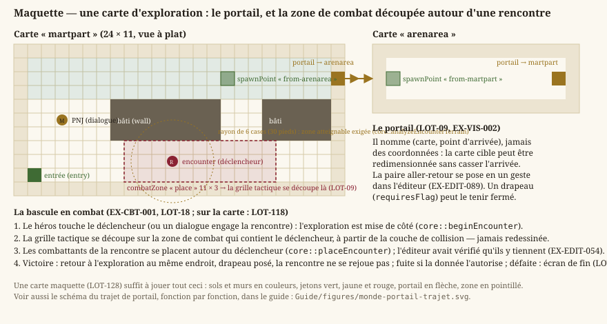

Exploration
Statut : en cours. Le déplacement, la collision et l'orientation sont livrés (
LOT-06), le vocabulaire de terrain aussi (LOT-08), et les portails relient les cartes (LOT-09). Ce qui manque est le déclenchement d'une rencontre sur la carte (LOT-118). Dépend dearchitecture.md(conventions de monde) et deniveaux.md(couche de collision).
L'exploration est la moitié « temps réel » du jeu : un personnage parcourt une carte, sans tour ni initiative, jusqu'à ce qu'une rencontre bascule la partie en combat tactique (LOT-18). Ce document porte les exigences de ce déplacement — ce que le combat en fera, à la case et au tour, relève de sa propre spécification.
Deux mécanismes font sortir le joueur d'une carte, et ce sont les seuls : le portail, qui mène à une autre carte, et la rencontre, qui fige le temps sans changer de lieu. La maquette ci-dessous les montre sur une carte réelle de la démo.
{kind=link}

Ce que la maquette rend visible : un portail nomme sa destination — une carte et un point d'arrivée — au lieu de pointer des coordonnées, ce qui permet de redimensionner la carte cible sans casser l'arrivée ; et la bascule en combat ne déplace personne, elle découpe une grille là où le joueur se trouve déjà.
1. Déplacement
- EX-EXP-001 — Le personnage doit se déplacer librement en 8 directions, sans gravité : aucun axe n'est privilégié, marcher vers le haut va exactement aussi vite que marcher vers la droite. La vitesse est isotrope — l'intention de déplacement est normalisée avant d'être mise à l'échelle, faute de quoi la diagonale vaudrait
√2 ≈ 1,41fois la vitesse cardinale, le défaut le plus courant du genre et le plus visible en jeu. Le départ et l'arrêt passent par une accélération et une friction réglables ; intention relâchée, le personnage s'arrête net, sans dérive résiduelle — dans un jeu où l'on se place à la case près (la grille tactique duLOT-19), glisser au-delà de la case visée est insupportable. Concrétisé enLOT-06.
- EX-EXP-002 — Le personnage ne doit jamais traverser une case bloquante, quelle que soit sa vitesse : le déplacement est résolu par un balayage continu contre la grille, jamais par un simple test de la position d'arrivée. La grille qui fait foi est la couche de collision de la carte (
EX-LVL-016), pas ce qui est dessiné : un tapis se traverse, un tonneau non, et les deux peuvent reposer sur la même image de sol. Concrétisé enLOT-06.
- EX-EXP-003 — Un obstacle pris en biais doit laisser glisser le long de sa surface : la composante bloquée s'annule, l'autre continue d'avancer. Sans cela, la moindre diagonale contre un mur immobiliserait complètement le personnage, et longer une paroi demanderait de corriger sa direction au pixel près. La vitesse de l'axe bloqué est remise à zéro plutôt que conservée : autrement, pousser contre un mur accumulerait un élan qui catapulterait le personnage dès la fin de l'obstacle. Concrétisé en
LOT-06.
- EX-EXP-004 — Le personnage doit porter une orientation, mise à jour par sa marche et conservée à l'arrêt : un personnage immobile regarde là où il allait, jamais vers une direction par défaut. C'est cette orientation que liront le choix du sprite (
LOT-08), l'interaction avec ce qui est devant (LOT-10) et l'attaque au corps à corps (LOT-21) — d'où un vecteur, et non le simple gauche/droite d'un jeu en vue de côté. Concrétisé enLOT-06.
- EX-EXP-005 — Une carte doit disposer d'un vocabulaire de terrain : des sols (herbe, terre, sable, eau), des obstacles (mur, falaise) et des passages (pont, escalier). Chaque type déclare lui-même s'il arrête ou non — c'est ce test unique, et non une liste éparpillée de cas particuliers, qui décide de la traversée (
EX-EXP-002). L'eau profonde arrête tant qu'aucune règle de nage n'existe : la distinction d'avec l'eau peu profonde est la seule chose qui permette à une rive d'exister. Aucun type ne peut être ajouté sans son repli procédural : le jeu doit afficher une carte lisible sans qu'aucun fichier d'image ne soit présent (EX-NFR-040), et une case laissée sans couleur serait indiscernable de ses voisines. Concrétisé enLOT-08.
2. Repères d'échelle
Une case vaut 1,5 m (5 ft), l'unité tactique du système d20, que la grille de combat du LOT-19 reprendra telle quelle. Une vitesse de marche de 4 unités/seconde représente donc environ 6 m/s : le pas soutenu d'un jeu d'action, pas la vitesse réelle d'un marcheur — l'exploration doit rester agréable à la manette, pas simuler une randonnée.